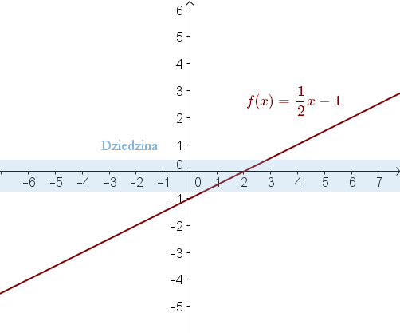

Dziedzina funkcji
Zacznijmy od przypomnienia takich pojęć jak argument funkcji oraz wartość
funkcji.
- argumenty funkcji to \(x\)-y (z osi poziomej układu współrzędnych)
- wartości funkcji to \(y\)-ki (z osi pionowej układu współrzędnych)
Definicja
Dziedzina funkcji - to zbiór wszystkich argumentów funkcji.
Równoważne definicje:Dziedzina - to zbiór tych \(x\)-ów dla których określona jest funkcja.
Dziedzina - to zbiór tych \(x\)-ów dla których istnieje wykres funkcji.
Dziedziną funkcji \(f(x) = \frac{1}{2}x - 1\) jest zbiór wszystkich liczb
rzeczywistych, ponieważ pod \(x\)-a możemy podstawić dowolną liczbę rzeczywistą i obliczyć dla niej
wartość funkcji. Przykładowo: \[ f(4)=\frac{1}{2}\cdot 4-1=2-1=1\\[6pt] f(\sqrt{3})=\frac{1}{2}\cdot
\sqrt{3}-1=\frac{\sqrt{3}}{2}-1 \] Możemy też zauważyć, że podana funkcja jest funkcją liniową i jej
wykres istnieje dla każdego argumentu \(x\).  Dziedzina: \(x\in \mathbb{R} \).
Dziedziną każdej funkcji liniowej, kwadratowej i wielomianowej jest zbiór liczb
rzeczywistych.
Wyznacz dziedzinę funkcji \(f(x)=\frac{1}{x}\).
Do wzoru tej funkcji nie można podstawić pod \(x\)-a liczby \(0\), ponieważ
nie wolno dzielić przez zero.
Wartość funkcji dla \(x=0\) nie istnieje, co ilustruje poniższa tabelka.
| \(x\) | \(-2\) | \(-1\) | \(0\) | \(1\) | \(2\) | \(3\) |
| \(f(x)=\frac{1}{x}\) | \(-\frac{1}{2}\) | \(-1\) | nie istnieje | \(1\) | \(\frac{1}{2}\) | \(\frac{1}{3}\) |
Poniżej podaję dwa inne sposoby na zapisanie tej samej dziedziny.
Dziedzina: \(x\ne 0\).
Dziedzina: \(x\in (-\infty ;0)\cup (0;+\infty )\).
Wyznacz dziedzinę funkcji \(f(x) =\sqrt{x}\).
Do wzoru funkcji \(f(x) =\sqrt{x}\) nie możemy podstawić pod \(x\)-a liczby
ujemnej, ponieważ nie istnieją pierwiastki z liczb ujemnych. Ta funkcja jest określona
tylko dla liczb dodatnich oraz zera.
Wykres tej funkcji istnieje tylko dla \(x\)-ów nieujemnych: Dziedzina: \(x\in \langle
0; +\infty )\).
Poniżej podaję inny sposób zapisania tej samej dziedziny.
Dziedzina: \(x\ge 0\).
| \(x\) | \(-3\) | \(-2\) | \(-1\) | \(0\) | \(1\) | \(2\) | \(3\) |
| \(f(x)=\sqrt{x}\) | nie istnieje | nie istnieje | nie istnieje | \(0\) | \(1\) | \(\sqrt{2}\) | \(\sqrt{3}\) |
Poniżej podaję inny sposób zapisania tej samej dziedziny.
Dziedzina: \(x\ge 0\).
Dziedzinę funkcji określamy zawsze gdy istnieje zagrożenie, że podstawiając do
wzoru jakąś wartość liczbową, otrzymamy działanie niedozwolone w matematyce.
Działania niedozwolone w matematyce to:
- dzielenie przez \(0\),
- wyciąganie pierwiastka (parzystego stopnia) z liczby ujemnej,
- obliczanie logarytmu z liczby ujemnej,
- umieszczanie w podstawie logarytmu liczby ujemnej lub równej \(1\).
Wśród powyższych "zagrożeń" najważniejsze są dwa pierwsze. To z nimi spotykamy
się najczęściej.
W tym nagraniu wideo omawiam pojęcie dziedziny funkcji.
Dziedziną funkcji \( f \) jest przedział 
A.\(\langle 0,3 \rangle \)
B.\((0, 8 \rangle \)
C.\(\langle -3,3 \rangle \)
D.\((-3, 8 \rangle \)
D
Dziedziną funkcji \(f(x)=\begin{cases} -2x+1,\quad \text{gdy }
x\lt 1\\ -x,\quad \text{gdy } 1\le x\le 4 \end{cases} \) jest zbiór
A.\( (-\infty ,4\rangle \)
B.\( \langle 1,4 \rangle \)
C.\( \langle 0,4 \rangle \)
D.\( (-\infty ,1) \)
A
Dziedziną funkcji \(f(x)=\frac{x+3}{x^3+4x}\) jest zbiór:
A.\( \mathbb{R} \backslash \{ -4,0 \} \)
B.\( \mathbb{R} \backslash \{ 0 \} \)
C.\( \mathbb{R} \)
D.\( \mathbb{R} \backslash \{ -2,0,2 \} \)
B
Dziedziną funkcji \(f(x)=\frac{x^2-16}{(x-2)(x+4)}\) jest
zbiór:
A.\( \mathbb{R} \backslash \{ -2,4 \} \)
B.\( \mathbb{R} \backslash \{ 2,-4 \} \)
C.\( \mathbb{R} \backslash \{ -4,4 \} \)
D.\( \mathbb{R} \backslash \{ 2 \} \)
B
Dziedziną wyrażenia wymiernego \(\frac{36-x^2}{(6-x)(x^3-1)}\) jest zbiór
A.\( \mathbb{R} \backslash \{1,6 \} \)
B.\( \mathbb{R} \backslash \{-6,-1,6 \} \)
C.\( \mathbb{R} \backslash \{-6,6 \} \)
D.\( \mathbb{R} \backslash \{-6,1,6 \} \)
A
Dziedziną funkcji \(f\), określonej wzorem \(f(x)=\frac{x-5}{x^2+4}\), jest zbiór:
A.\( \mathbb{R} \backslash \{ -4,4 \} \)
B.\( \mathbb{R} \backslash \{ -4 \} \)
C.\( \mathbb{R} \)
D.\( \mathbb{R} \backslash \{ 5 \} \)
C
Liczba \(3\) nie należy do dziedziny wyrażenia:
A.\( \frac{x-3}{|x+3|} \)
B.\( \frac{2x-1}{|x-3|} \)
C.\( \frac{2x-1}{|x|+3} \)
D.\( \frac{x-3}{|2x-1|} \)
B
Ile, co najwyżej, liczb naturalnych należy do dziedziny funkcji określonej wzorem
\(f(x)=\sqrt{1-x}\)?
A.\( 0 \)
B.\( 1 \)
C.\( 2 \)
D.Nieskończenie wiele
C
Dziedziną funkcji \(f(x)=\frac{x-2}{x^2-4}\) jest zbiór
A.\( \mathbb{R} \backslash \{ 2 \} \)
B.\( (-\infty ,2) \)
C.\( \mathbb{R} \backslash \{-2, 2 \} \)
D.\( (2,0) \)
C
Zbiór \(\mathbb{R} \backslash \{-3, 0, 2\}\) jest
dziedziną wyrażenia
A.\( \frac{x^2+3x+1}{x^2+x-6} \)
B.\( \frac{x^2-x-2}{x^3+5x^2+6x} \)
C.\( \frac{3x+2}{x(x-2)(x-3)} \)
D.\( \frac{2x+2}{x(x-2)(x+3)} \)
D
Które liczby ze zbioru \(\{-3, -2, -1, 0, 1, 2, 3\}\)
nie należą do dziedziny poniższego wyrażenia wymiernego: \[\frac{x^2+x-5}{x^3-9x}\]
A.\( 0,9 \)
B.\( -2,-1,1,2 \)
C.\( -3,-1,1,3 \)
D.\( -3,0,3 \)
D
Dziedziną wyrażenia \(\frac{2-x}{(x+3)(x^2+4x+4)}\)
jest zbiór:
A.\( \mathbb{R} \backslash \{ 2,3,-3 \} \)
B.\( \mathbb{R} \backslash \{ -3,2 \} \)
C.\( \mathbb{R} \backslash \{ -3,-2 \} \)
D.\( \mathbb{R} \backslash \{ -3,-2,3 \} \)
C
Wiadomo, że dziedziną funkcji \(f\) określonej wzorem \(f(x)=\frac{x-7}{2x+a}\)
jest zbiór \((-\infty ,2)\cup (2,+\infty )\). Wówczas
A.\( a=2 \)
B.\( a=-2 \)
C.\( a=4 \)
D.\( a=-4 \)
D
Wyznacz dziedzinę następujących funkcji:
a) \(f(x)=\frac{5}{x}\)
b) \(f(x)=x+\frac{2}{x+3}\)
c) \(f(x)=3x-\frac{x+1}{5x-2}+17\)
a) \(x\ne 0\)
b) \(x\ne -3\)
c) \(x\ne \frac{2}{5}\)
Wyznacz dziedzinę następujących funkcji:
a) \(f(x)=\frac{1}{3x+6}+\frac{2x}{x+1}\)
b) \(f(x)=4x-\frac{x}{x-1}+\frac{3x-2}{x}\)
c) \(f(x)=\frac{1}{x}+\frac{3}{2x}-\frac{5-2x}{x-3}-\frac{x}{2x+4}\)
a) \(x\ne -2\land x\ne -1\)
b) \(x\ne 1 \land x\ne 0\)
c) \(x\ne 0\land x\ne 3\land x\ne -2\)
Wyznacz dziedzinę następujących funkcji:
a) \(f(x)=\frac{1}{x(x-3)}\)
b) \(f(x)=\frac{2x+1}{3x(x-2)}-\frac{|x|}{(x-\sqrt{5})(x+3)}\)
a) \(x\ne 0\land x\ne 3\)
b) \(x\ne 0\land x\ne 2\land x\ne \sqrt{5}\land x\ne -3\)
Wyznacz dziedzinę następujących funkcji:
a) \(f(x)=\sqrt{x+3}\)
b) \(f(x)=\sqrt{2x-8}\)
c) \(f(x)=\sqrt{3x^2+1}\)
a) \(x\ge -3\)
b) \(x\ge 4\)
c) \(x\in \mathbb{R} \)
Wyznacz dziedzinę następujących funkcji:
a) \(f(x)=\sqrt{x-2}+\sqrt{x+7}\)
b) \(f(x)=x-\sqrt{x-1}+\sqrt{7-x}\)
a) \(x\ge 2\)
b) \(x\in \langle 1;7 \rangle \)
Wyznacz dziedzinę funkcji \(f(x)=x+\frac{1-\sqrt{x+1}}{3\sqrt{1-2x}}\).
\(x\in \left\langle -1;\frac{1}{2}\right ) \)
Wyznacz dziedzinę funkcji \(f(x)=\frac{\sqrt{3-|x+2|}}{x(x+3)}\).
\(x\in \langle -5;-3)\cup (-3;0)\cup (0;1\rangle \)
Dziedziną funkcji \(f\) określonej wzorem \(f(x)=\frac{x+4}{x^2-4x}\) może być
zbiór
A.wszystkich liczb rzeczywistych różnych od \( 0 \) i \(4\).
B.wszystkich liczb rzeczywistych różnych od \( -4 \) i \(4\).
C.wszystkich liczb rzeczywistych różnych od \( -4 \) i \(0\).
D.wszystkich liczb rzeczywistych.
A